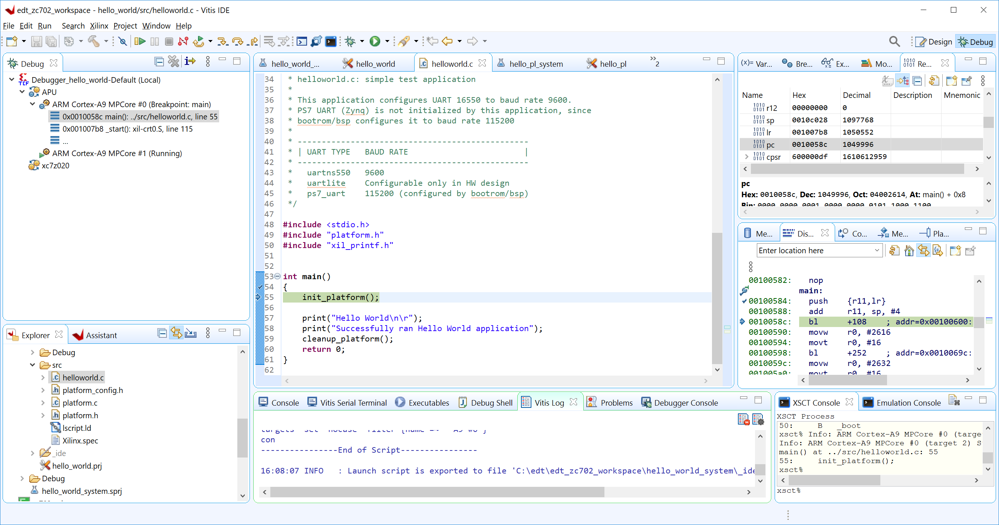

Debugging Standalone Applications with the Vitis Software Platform¶
Although a simple “Hello World” application does not require much debugging, this chapter demonstrates the debugging setup and procedurein the Vitis IDE in Example 3: Debugging Standalone Software Using the Vitis Software Platform.
The Vitis software platform debugger provides the following debug capabilities:
Debugging of programs on MicroBlaze™ and Arm Cortex™-A9 processor architectures (heterogeneous multi-processor hardware system debugging)
Debugging of programs on hardware boards
Debugging on remote hardware systems
A feature-rich integrated design environment (IDE) to debug programs
A Tool Command Language (Tcl) interface for running test scripts and automation
The Vitis debugger enables you to see what is happening to a program while it executes. You can set breakpoints or watch points to stop the processor, step through program execution, view the program variables and stack, and view the contents of the memory in the system.
The Vitis software platform supports debugging through Xilinx System Debugger and GNU Debugger (GDB).
Note
The GDB flow is deprecated and might not be available in the future releases.
Xilinx System Debugger¶
The Xilinx System Debugger uses the Xilinx hw_server as the underlying debug engine. The Vitis software platform translates each user interface action into a sequence of Target Communication Framework (TCF) commands. It then processes the output from System Debugger to display the current state of the program being debugged. It communicates to the processor on the hardware using Xilinx hw_server.
The debug workflow is described in the following figure.

The workflow is made up of the following components:
Executable ELF File: To debug your application, you must use an Executable and Linkable Format (ELF) file compiled for debugging. The debug ELF file contains additional debug information for the debugger to make direct associations between the source code and the binaries generated from that original source. To choose a build configuration, click the dropdown menu of the hammer icon on the tool bar and select Debug or Release. To manage a build configuration, right-click the software application, select C/C++ Build Settings, choose the configuration in the drop down menu, then change the build settings accordingly.
Debug Configuration: To launch the debug session, you must create a debug configuration in the Vitis software platform. This configuration captures the options required to start a debug session, including the executable name, processor target to debug, and other information. To create a debug configuration, right-click your software application and select Debug As → Debug Configurations.
Debug Perspective: Using the Debug perspective, you can manage the debugging or running of a program in the Vitis IDE. You can control the execution of your program by setting breakpoints, suspending launched programs, stepping through your code, and examining the contents of variables. To view the Debug perspective, select Window → Open Perspective → Debug. You can also quickly switch the perspective using the Design or Debug buttons on the upper-right corner of the Vitis IDE.
You can repeat the cycle of modifying the code, building the executable, and debugging the program in the Vitis software platform.
Note
If you edit the source after compiling, the line numbering will be out of step because the debug information is tied directly to the source. Similarly, debugging optimized binaries can also cause unexpected jumps in the execution trace.
Example 3: Debugging Standalone Software Using the Vitis Software Platform¶
In this example, you will walk through debugging the “Hello World” application created in Example 2 in the previous chapter.
Input and Output Files¶
Input files: Vitis workspace from Example 2
Output files: N/A
Debugging Standalone Applications in the Vitis IDE¶
In the C/C++ perspective, right-click the Hello_world project and select Debug As → Debug Configurations.
In Target Setup tab, fill the Hardware Platform field with the one exported by the Vivado® Design Suite, and click the Debug button.

The Debug perspective opens.
Note
If the Debug Perspective window does not automatically open, select Window → Open perspective and select Debug in the Open Perspective dialog box.
Note
The addresses shown on this page might differ slightly from the addresses shown on your system.
The processor is currently sitting at the beginning of
main(). You can confirm this information in the Disassembly view, which shows the assembly-level program execution also suspended at the same address.Note
If the Disassembly view is not visible, select Window → Show view, select Disassembly under Debug, and click Open.
The helloworld.c window also shows execution suspended at the first executable line of C code.
Note
If the Registers view is not visible, select Window → Show view → Debug→ Registers.
Double-click in the margin of the helloworld.c window next to the line of code that reads
init_platform()andprint(). This sets the breakpoints atinit_platform()andprint(). To confirm the breakpoints, review the Breakpoints view.Note
If the Breakpoints view is not visible, select Window → Show view → Debug → Breakpoints.
Select Run → Step Into to step into the
init_platform()routine.The program executes one step. The call stack is now two levels deep.
Select Run → Resume to continue running the program to the breakpoint.
Program execution stops at the line of code that includes the print command.
Note
The execution address in your debugging window might differ if you modified the “Hello World” source code in any way.
Select Run → Resume to run the program to conclusion.
When the program completes, the Terminal view shows the Hello World print and the Debug view shows that the program is suspended in a routine called
exit(). This happens when you are running under control of the debugger.Rerun your code several times. Experiment with single-stepping, examining memory, breakpoints, modifying code, and adding print statements. Try adding and moving views.
Tip
You can use Vitis IDE debugging shortcuts for step-into (F5), step-over (F6), step-return (F7), and resume (F8).
Click the Disconnect button on the tool bar to disconnect to the board, or exit the Vitis software platform directly.
This chapter introduced standalone software building and debugging. In the next chapter, you can start working on Linux applications for Zynq-7000 SoCs.